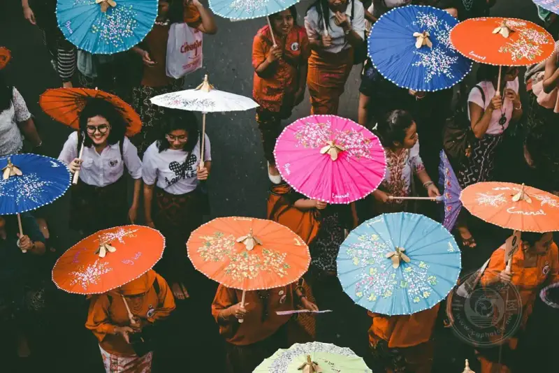
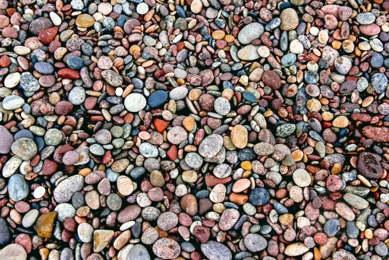
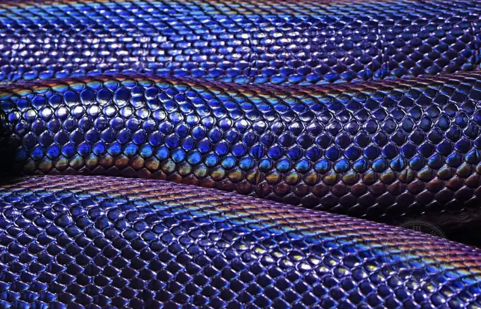
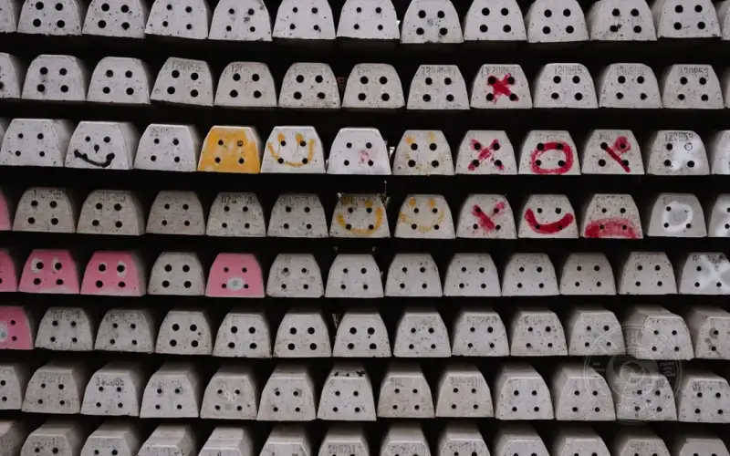
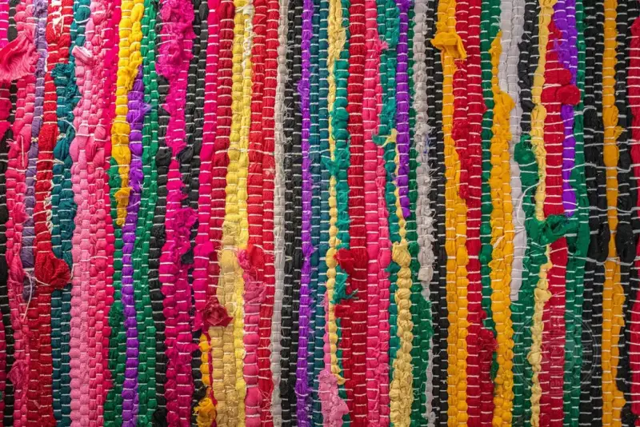
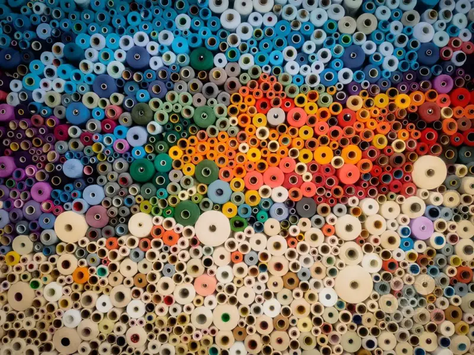
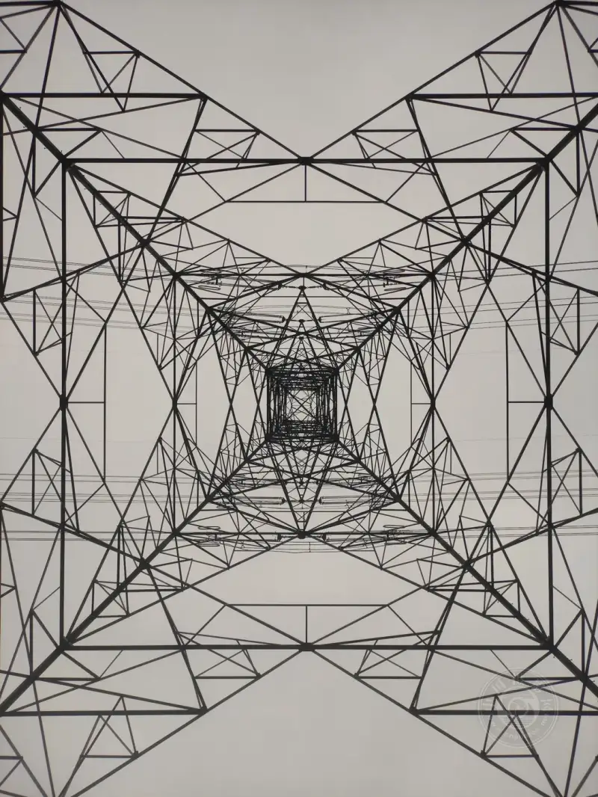
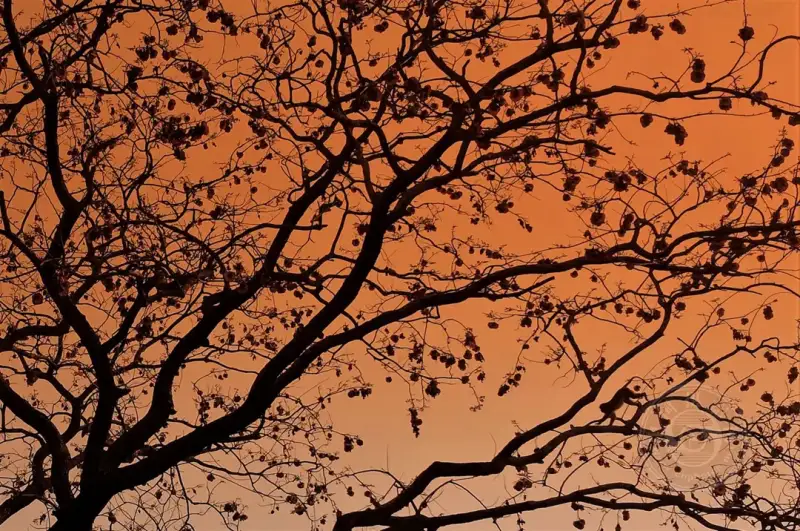
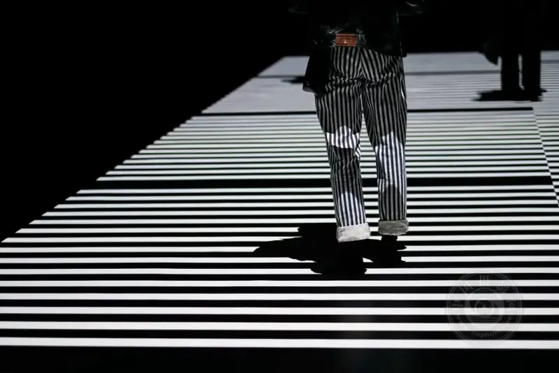

Published: 2023-07-13
Source link: https://www.cnphotos.net/academy/show-143.html
In photography, a pattern forms when visual elements in a scene repeat mainly through shape and color. This repetition helps you create an engaging image, and sometimes it even reaches the abstract.
Patterns are charming elements. They bring a sense of order and harmony to your work. Whether through reflection of a subject, repeated shapes, or symmetric elements, patterns create images that are visually striking and balanced.
Patterns are common in life. Look around you, in your home, on the street, or in nature, and you can find patterns anywhere without effort.
Below is a set of pattern images. They show how to use patterns as a strong compositional tool. I hope these photos inspire your own shooting.
▲©Greg Bulla

▲©Pradamas Gifarry
▲©David Clode
▲©Guillaume Bolduc
▲©Nicolas Houdayer

▲©Graphic Node

▲©David Clode
▲©Ryunosuke Kikuno

▲©Nico Knaack

▲©Brian Wangenheim

▲©Patrycja Chociej

▲©Sagar Somsaale
▲©George Bakos
▲©Caroline Selfors

▲©Craig Manners
▲©Karen Vardazaryan
▲©Ricardo Gomez Angel

▲©Brandon Wong